רונית בלנרו-אדיב
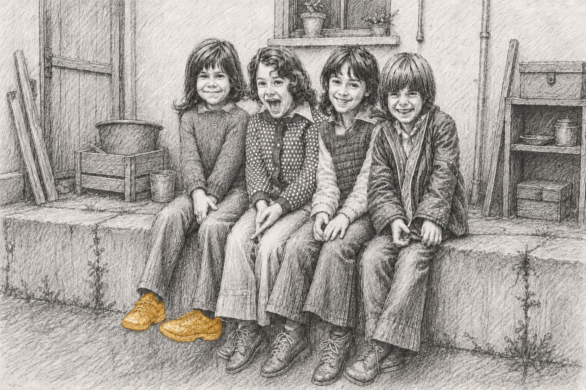

בּוֹאִי, אמא
ילדיי רצים לפניי. הדרך מאובקת, רגליהם יחפות, עוד מספר צמחי תירס גבוהים ומאחורי הסיבוב תתגלה לעינינו שלולית הבוץ הגדולה. הם מכירים אותה, היא מכירה אותם. השעטה לעברה חגיגית כמעט, כל אחד ריצתו על-פי אורך רגליו, אך כל גופו ועיתותיו מושקעים בה. כשנחזור יהיו בגדיהם ספוגים בוץ ומים, עינייהם יזהרו. אני משתרכת מאחוריהם לאיטי. הם יחפים, אני בסנדלים. לעולם יהיה לי נעים יותר יחפה, אך גם בסנדלים כבר נוח לי. הרוח בפנינו, מרחבי השדות עצומים, האדמה המרגיעה כאן איתי, השמים קרובים, הזמן אינסופי. אני נושמת הכל לתוכי, שקועה ברגע שאינו ממהר לחמוק ולהתפוגג. צעדיי נחים על אדמת דרך העפר החשופה, אני בבית.
ילדוּת שפע. שפע ריחות, אדמה, מרחבים. העיניים אוספות את המראות, בולעות כל שאפשר; הידיים נוגעות, מרגישות; הגוף נמצא, סופג, רושם. התרחשות אינסופית של תגליות קטנות ומפעימות – עולם שאין בו רגע דל. ברגעים - מופלאה. לעתים, באותם רגעים ממש - אסון.
בוקר-צהריים-ערב-לילה. ושוב בוקר.
ילדיי גרים בביתם. שהוא ביתי. ממנו הם יוצאים בלכתם, ואליו הם שבים. הם אינם יודעים אחרת. אינם יכולים להעלות בדעתם אחרת. בינקותם, עוד טרם ידעו מי אני, ידעו כי אני כאן, לידם. בלילות הביאה אליהם ייפחתם זרועות מחבקות, שקע צוואר מוכר, מלמולי אמא – ה׳לבד׳ לא הורשה לגעת בם. כשגדלו, טפפו רגליהם בפסיעות-ריצה קטנות למיטתנו, וגוף מבוהל מצא נחמתו בגוף-אם-חם שכמו חיכה שם תמיד. כאן הם פוקחים את עיניהם כשעולה הבוקר, כאן הם עוצמים אותן עם רדת הלילה. כאן הוא ביתם ובו הם גדלים.
כאן הם פוגשים אותנו, הוריהם. מפגש של בוקר-צהריים-ערב-לילה. ושוב בוקר. כולנו נעים יחד בתוך מעגל רגעים אינסופי של היומיום, של החיים. אנו מכירים אותם, את גופם, את נפשם. הם מכירים אותנו, את גופנו, את נפשנו. בצד נועם הרגעים הטובים נוכחים כל העת רגעי יומיום פשוטים של ריבים על כניסה לאמבטיה, סירוב ללכת לישון, טרוניית "שוב אין מה לאכול" אל מול שולחן עמוס, התארגנות בוקר לחוצה. הם מכירים אותנו על רגעי חוסר-סבלנותנו, עייפותנו, חוסר-פניותנו. הם מכירים אותנו על רגעי התעקשותנו איתם, עימותינו מולם כחלק מדאגתנו להם, מטיפולנו בהם – ׳ביחד׳ שהוא נתון טבעי בהוויה, חלק בלתי-נפרד ממנה. זוהי משפחתם.
אנחנו, ילדי-הקיבוץ, גרנו בבית-הילדים. עשרים שעות בקבוצה מתוך עשרים-וארבע שעות-היממה. התקיימות חברתית שאינה נגמרת, שאין לאן לנוס מפניה. עשרים שעות בהן קרו חיינו, שעות מנותקות מבית ההורים.
אנחנו, ילדי-הקיבוץ, נעדרנו מבית ההורים. בית, שכל אחד מאיתנו הגדיר כביתו, קרוב כל-כך, במרחק כמה מאות מטרים בלבד מבית-הילדים. ידענו מי הורינו, הדמויות החשובות ביותר בעולמנו, דמויות נעדרות תחליף. אוהבות כל-כך ואהובות כל-כך. מעולם לא בלבלנו בין המטפלות לבינם. בית הורינו היה ביתנו לכל דבר, רק לא גרנו בו. מהו בית?
לא אבא ואמא סירקו את שיערנו אל מול המראה, לא אבא ואמא ידעו איך אנחנו אוהבים לאכול את האורז ולהפריד את האפונה, לא אבא ואמא רחצו את גופנו ופגשו את השריטה האחרונה, שמעו את סיפור התרחשותה וחבשו אותה בשימת-לב.
אמת, היו הורים שעשו את אלה גם הם בצד המטפלות. אימהות שהתעקשו לבשל, לאפות, למלא בניחוחות טיפול ואהבה את ביתן; אימהות שלבושו של ילדן העסיק אותן; בוודאי היו הורים שטיפחו באהבה את צמות ילדתם וחבשו ברוך את אצבע ילדם. ייתכן, כי דווקא אלה מאיתנו שזכו להורים שעשו כל זאת, שלא שעו לכללים כלשונם, הורים שחוו עצמם כהורים במלוא מובן המילה ואף פעלו לא פעם בניגוד למקובל – זכו באופן לא מדובר בתיקוף סדרי-העולם המתוקנים.
ובצד כל זאת, אותם הורים ממש, השיבו אותנו ערב-ערב אל בית-הילדים, בחרו בהסכמה למסור את אותן זירות הוריות שכדרך-הטבע שייכות להם – לידיים אחרות. ויתרו על מפגשים קטנים ויומיומיים, שלכאורה ׳אינם-נחשבים׳, מפגשים שהם-הם כל עולמו של ילדם, שהם-הם משמע לגדל.
רוצה אני להאמין, כי רובנו זכינו בהורים בריאים-דיים בנפשם, ובמטפלות בריאות-דיין בנפשן. רוצה אני להאמין, כי ידי המטפלות שנגעו בפיסות נפשנו, היו מיטיבות ורכות בעיקרן, וכי ידענו כי אנו אהובים על-ידי הורינו. אך אני גם זוכרת – לא אחד ולא שניים מאיתנו – מתגעגעים. כמהים. רוצים כל-כך. הביתה. לאבא ואמא. לא תמיד בקול רם, לא תמיד במילים. לעתים במצוקה אחרת שלא הובנה נכונה, לעתים בבדידות, בשקט.
השפע היה סביבנו. במובנים כה רבים היינו מרכז עולמם של המבוגרים. כיצד, אם כן, יכלו אלה בינינו שנשאו בתוכם תחושה חסרת-שם ש׳משהו חסר׳, להסביר זאת לעצמם? אם יש כל-כך הרבה, איך זה עדיין מרגיש חסר?
כל-כך רוצה שאבא יישאר איתי עוד קצת בהַשְׁכָּבָה, למה הוא לא נשאר? כל-כך רוצה שאמא תסרק אותי, תלטף את לחיי בלא-משים, מדוע לא היא המסרקת אותי? כל כך רוצה להישאר איתם ללילה ולהתעורר איתם בבוקר, למה הם לא לוקחים אותי אליהם? כל-כך רוצה פשוט לשבת עם אמא, להניח את הראש על ברכיה. לא אפריע. רק אנוח. מדנה, מיותם, מיפתח. מעמליה. מהבֶּיתֶלָדִים. אל תחזירו אותי ברבע לשמונה. למה אי-אפשר?
בתוך האינטימיות הכפויה והאינטנסיבית בבית-הילדים, הדינמיקות החברתיות האינסופיות ופעמים רבות אף הבדידות, נזקקנו נואשות למקום כזה, של אהבת הורה ללא תנאי, מקבלת, מגוננת, יותר מארבע שעות ביום. אין ספק, כי העדרם של הורינו כדמויות המרכזיות המגדלות אותנו, גבה מחירים והותיר את חותמו. היום אני יודעת, כי לא-מעטים מאיתנו חוו בצורה כלשהי, מודעת יותר או מודעת פחות, את שפע ה׳יש׳ ואת תהום ה׳אין׳. ובעיקר – את הפער הבלתי-נסבל שביניהם.
היום אני יודעת – ילדים אמורים לגדול עם הוריהם.
גרנו, לכאורה, עם הורינו, ראינו אותם יום-יום. ההורים תפסו עצמם כהורים, וכך תפסנו אותם גם אנו, הילדים. עובדת גידולנו בידי ידיים אחרות לא נקראה בשם, לא דוברה. הפער בין מעמדם ה׳רשמי׳ של ההורים, לבין העובדה כי חיינו התקיימו עשרים שעות בנתק כמעט מוחלט מהם; הפער בין דרך-הטבע בה יודע ילד כי הוריו בוחרים בו ובגידולו לבין בחירת והסכמת הורינו להפקיע מידיהם את תפקידיהם ההוריים – כל אלה נשתתקו.
היום אני יודעת – לגדול עם הורייך זהו סדר-עולם מתוקן. מציאות שאינה כזו משמעה הפרת סדרי-עולם, גם כשנעשה הדבר מתוך אהבה.
כשברחנו הביתה נחשבנו ׳בעייתיים׳. אלה בינינו שמיאנו להירגע בזרועות המטפלות, שלא פסקו מלבקש את הוריהם, נחשבו ׳בעייתיים׳. להתבונן דרך התריסים ולקוות שאבא יסתובב – נחשב מבייש. הצצנו בסתר, קיווינו בדממה. לבד. לא ניתן היה לטעות או להתבלבל במסר שחי בינינו כאקסיומה נוחה שאין כל צורך לשאול עליה – הדבר הנכון הוא להתאים לקבוצה, לכלל, למציאות שהוגשה לנו ושלא הכרנו מלבדה. ואכן, לא התבלבלנו. וגם לא המבוגרים סביבנו, דרכם הפך דבר שאינו טבעי למציאות חיינו.
איני יכולה לדמיין עצמי מוותרת על ילדותי הזו בקיבוץ, אך את ילדיי לא אעביר אותה. זכיתי לדברים מפעימים, להווייה קיומית של חיבור למרחבי הטבע, של תחושת בית עת יכולה אני לחוש את האדמה תחת רגליי היחפות, את הצמחים, השמיים, החיים האחרים הרוחשים סביבי. דרכה זכיתי לתחושת שייכות לקולקטיב, שמעיניי ילדה, היה לא פחות מאדיר-עוצמה ומלא הוד.
ובצד אלה, היתה שם תמיד, עיקשת מאין-כמותה, אינה מוותרת, אינה מתרצה – מחשבה דקיקה, חמקמקה, לא ידועה כמעט, כי משהו חסר. חיפוש אחר דבר חסר-שם. ערגה.
ילדות מופלאה ואיומה כאחד.
השמש כבר שוקעת. מעל מרחבי השדות רמיזות צבע עדינות של כתום חיוור, שיילך ויגבר לורוד המוכר. זו השעה לחזור. הבגדים אכן מבוצבצים, וכך גם כפות הידיים והרגליים היחפות. מרחוק, לקראתנו בשביל, שתי דמויות קטנות. בני הוא הראשון לזהותן ולפתוח לעברן בריצה מהירה. בנותיי אינן מאחרות אחריו, הקטנה, כתם צבע ורוד-עז של שמלתה המתנופפת, מנסה נואשות להדביק ברגליה הקצרות את אחותה. עוד שניות מעטות, ייקלטו אותם הזרועות הפרושות לקראתם – סבא וסבתא הגיעו.
עיניי הוריי זורחות לקראת נכדיהם. כשאני קרבה, מתרחב חיוכם, באופן השמור רק לי. הם יודעים את מסלולנו בשדות, יודעים היכן למצוא אותנו. מגיעים כל שבוע באדיקות, במסירות, בהנאה פשוטה. ילדיי כבר בשטף מילים אינסופי, תובעים את מקומם מהסבים. אני זוכה לחיבוק, חיוך, עיניים שמחות וחמות.
איך לוקחים הורות שאינספור מרגעיה בעבר הם רגעי-זרות, ומאמצים אותה על אהבתה האינסופית? לכל ילד חלקים שאינם ידועים להוריו; כל הורה נותר בהיבטים מסוימים לא-ידוע לילדו. דומני, כי בינינו, ילדי-הקיבוץ, ובין הורינו, נחים ורוחשים חלקים רבים שאינם רק לא-ידועים ותו-לא, אלא מעבר לכך – חלקים זרים. כיצד כיום, בבגרות, מפייסים זרות שכזו, מכירים אלה את אלה, מתקרבים?
התיקון, ההתקרבות, תנועתם חמקמקה. יש שהם מצריכים את כניעתן האיטית של האבנים לתנועת-מים שקטה וכמעט בלתי-מורגשת, לעתים מגושמת, של ילד והורים המנסים להתקרב מחדש. התיקון וההתקרבות יודעים רגעי פיוס וסליחה בצד רגעי אבדן ועלבון נושן. ושם אנו נעים.
את התיקון וההתקרבות שנפלו בחלקי עוטפת ידיעתי כי הוריי אוהבים אותי אין-קץ. ובתוך כל אלה, בתוך בְּלִיל החיים, נעטפת קריאת הילדה המבקשת את אִמָּהּ כדי להפיג את החושך, ברוך חדש. זהו רוך של הושטת-יד. הזמנה ליחד. תיקון.
בּוֹאִי, אִמָּא. בּוֹאִי, אִמָּא.
בּוֹאִי שְׁבִי אִתִּי מְעַט.
רונית בלנרו-אדיב היא פסיכולוגית קלינית עם התמחות בטיפול בילדים וניסיון ייחודי בטיפול בילדים שהוצאו מביתם והושמו במסגרות טיפול-פנימייתי. נולדה בשנות ה-70 בקיבוץ השומר הצעיר והתחנכה בבית ילדים בלינה המשותפת ובמוסד החינוכי עד יציאתה לצבא.
נשואה ואם לארבעה, מזה שתים עשרה שנים מתגוררת בניו זילנד. בשנת 2016 ראה אור בהוצאת רסלינג הספר ״חיבוק חזק ולא כואב – הטיפול ה׳טוב דיו׳ בילדים המוצאים מביתם״, שכתבה עם ורד ביבי ותניה אורן-צייפמן כחלק מעבודה רבת-שנים בטיפול הפנימייתי.
״עיניים גדולות זה לא טוב״ הוא הרומן הראשון פרי עטה.
״אנשים טובים באמצע הדרך״
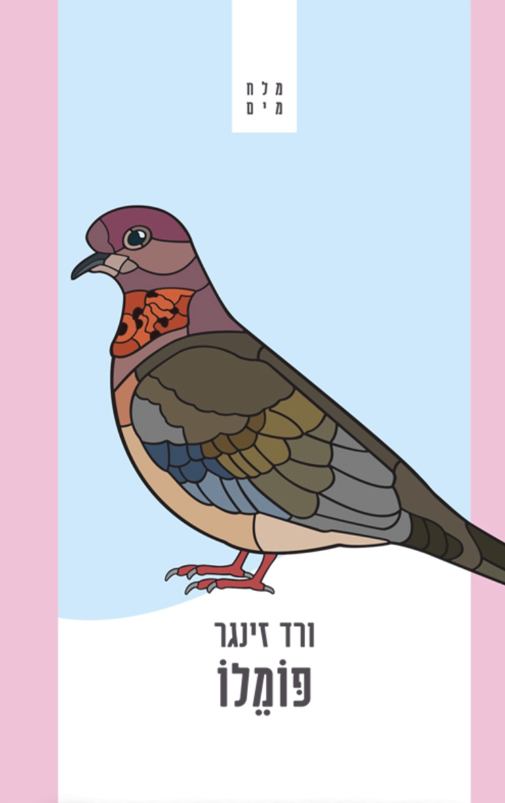
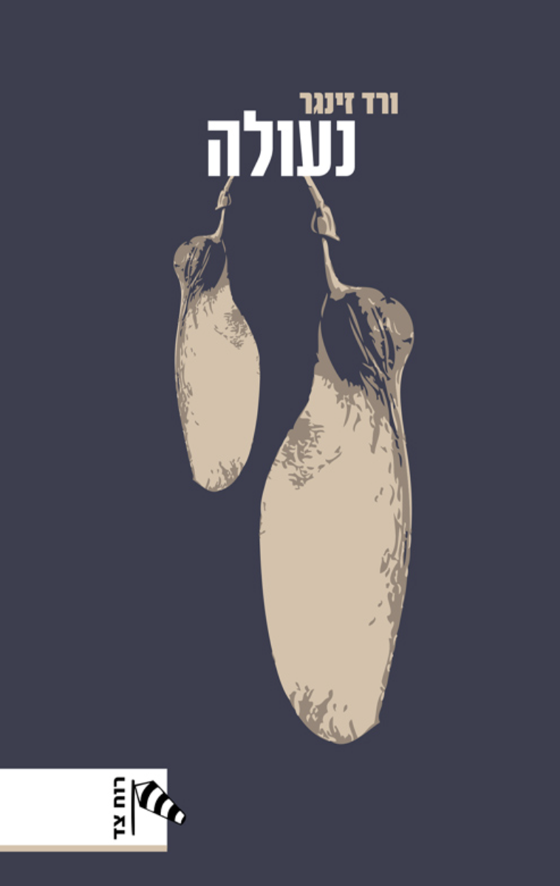
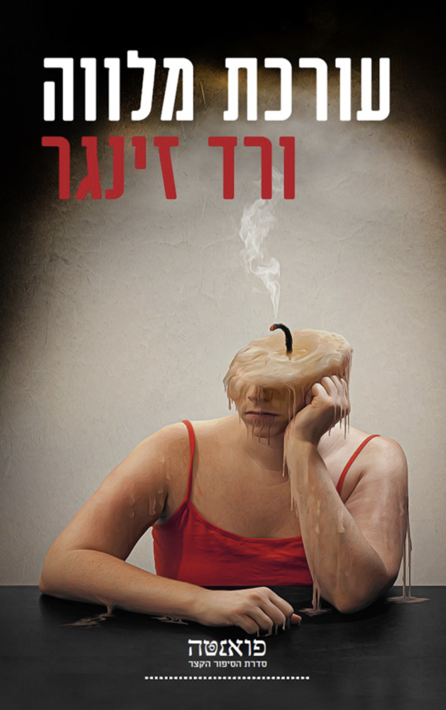
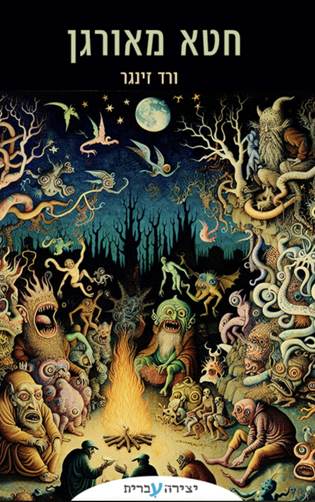
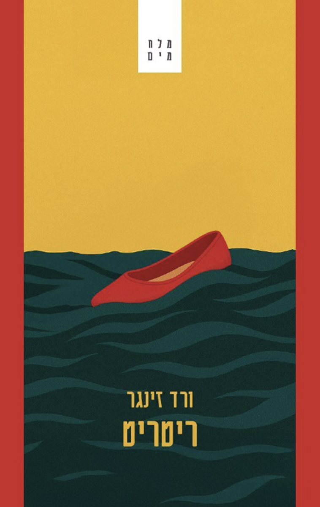
היי בן,
אני מקווה ששלומך בטוב! עכשיו, כשכתב היד חוזר אליך אחרי שלושה חודשים וחצי של עבודה עם ורד, רציתי לשתף אותך בעומק התודה שלי.
לא יכולתי לבקש ״דלת״ מיטיבה יותר להיכנס בעדה לתהליך מיוחד וחד-פעמי ככתיבת ספר ראשון. אני מניחה שכל עבודה משותפת על כתב יד היא רגישה ומשמעותית, אבל נדמה לי שהפעם הראשונה עשויה להיות אפילו יותר, ולהשפיע על המשך דרכו של הכותב בעבודה עם עורכים והוצאות בעתיד. יש בי תודה עמוקה על כך שנכנסתי לעולם הזה כשוֶרֶד היא המכניסה אותי בשעריו.
ברגישות וברוב מחשבה, בלי להתפשר לרגע על מקצועיות, ורד התמקמה לעיתים לפניי, מתווה דרך; לעיתים מאחוריי, נוכחות שקטה שמאפשרת לי להוביל; מעליי, מסוככת ומאמינה; וכל הזמן לצידי — צוות. בישירות שכולה כבוד — כבוד למקצועהּ, כבוד לעבודתנו המשותפת, כבוד ליצירה — יכולתי לסמוך עליה שהספר מקבל את מה שדרוש לו, ביסודיות ובלי קיצורי דרך.
וכשאני אומרת ״כבוד״, כוונתי לכבוד במובן העמוק שלו. ורד השכילה, כנראה גם בזכות ניסיונה אבל הרבה בזכות מי שהיא, לרקוד על הקו העדין של עורכת שרואה דברים שהכותבת עדיין לא יכולה לראות. היא ידעה לזרוע את הזרעים, להגיש לי את הרעיונות, להציע לי מהידע השופע שבאמתחתהּ — ומשם לתת לי להבין לבד, בקצב שלי, ולסמוך עליי. בהתמקמות שכזו אפשרה לי ורד לגדול מבפנים, להרגיש שהדברים באים ממני, שהם שלי ומתוכי — על אף שלא יכלו לבוא מתוכי בלעדיה.
ורד העניקה לי מראה מדויקת, אבל עוד הרבה יותר מכך. היא הייתה מושקעת בספר כל כולה, עד הסוף, בלהט אמיתי ובאכפתיות כנה. בוודאי שהיו לה עוד דברים ומחויבויות אחרות, ואני עדיין הרגשתי תמיד שהספר, ואני, מקבלים את מלוא תשומת ליבה.
כמי ששלחה כתב יד בלי שמץ של מושג אם הוא טוב וראוי, אני מבינה היום כמה מושקעוּת של עורכת יכולה בקלות גם להגדיל ספקות ולרפות ידיים. ורד הציבה בפניי מראה שהספר ראוי, שהעבודה עליו משמחת, שהוא מביא טוב. איזו דרך מופלאה להתרגש, לא לפחד להתלהב, לחגוג תהליך יצירה!
אז התודה שרציתי לשתף אותך בה היא תודה על כך שזו החוויה דרכה זכיתי להיכנס לעשייה הראשונה שלי, בזכות ורד. אני מניחה שלרבים יש חוויה טובה בספר הראשון, ועדיין — אני מסתכלת על כך בהשתאות ובפליאה, ומרגישה בת מזל.
אני יודעת שכבר אמרתי את זה בעבר, אבל התודה שלי אליך על שהספר קיבל ב״מטר״ הזדמנות — כנראה תוסיף ותגדל בזכות האנשים שמרכיבים את ההזדמנות הזאת.
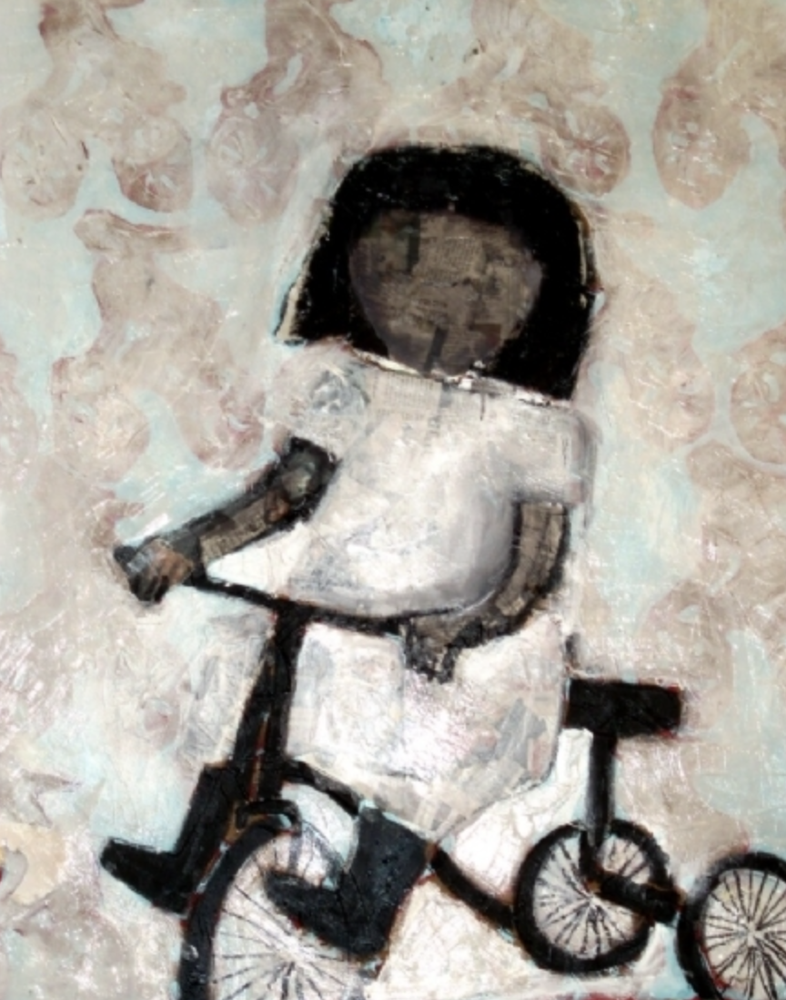
טכניקה מעורבת על בד · 2009
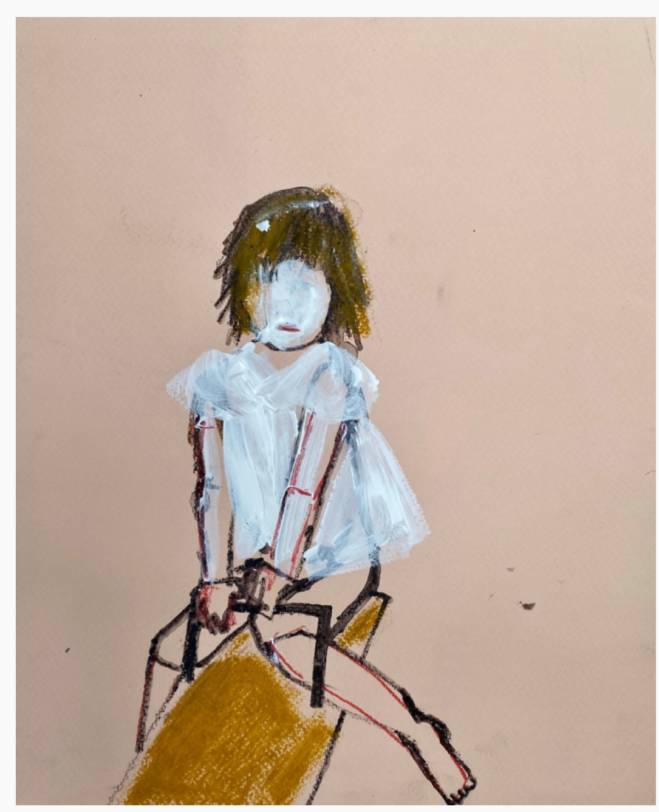
עפרון ואקריליק על נייר
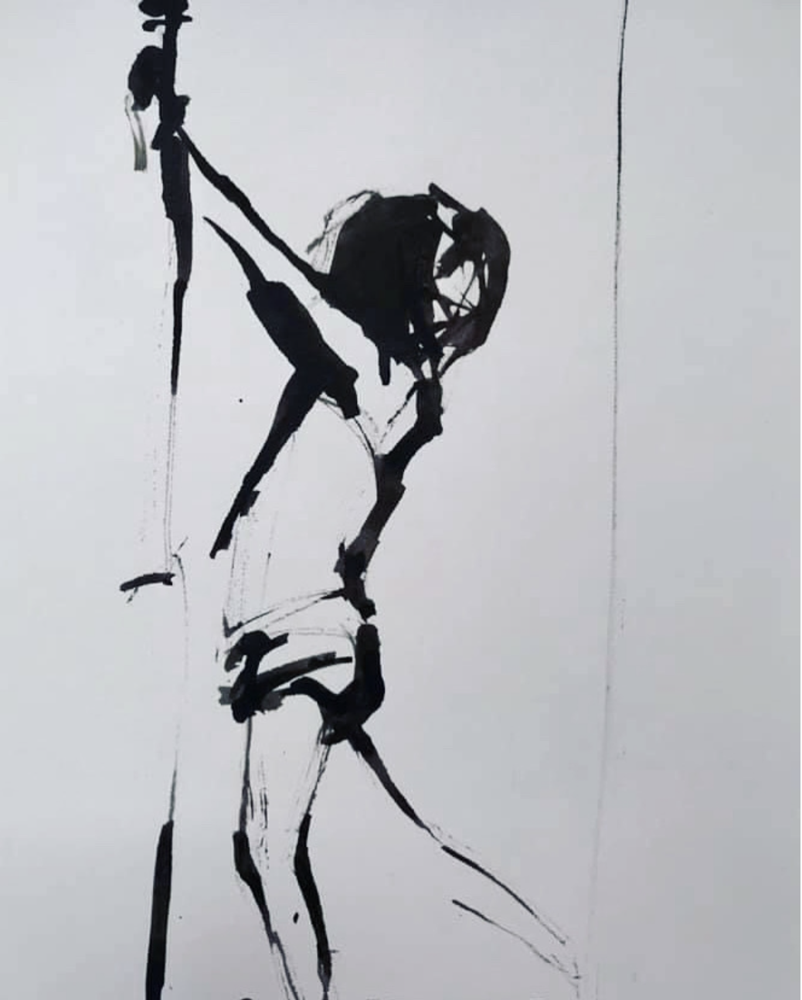
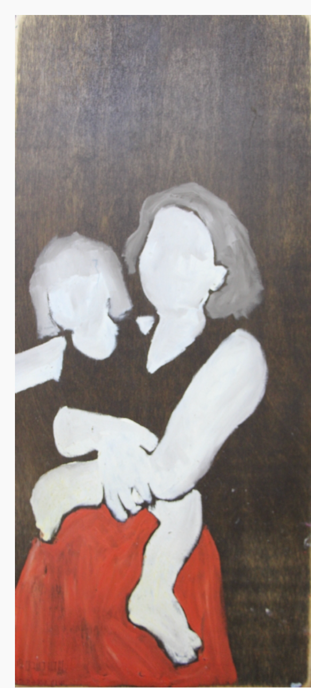
שמן על עץ · 2011
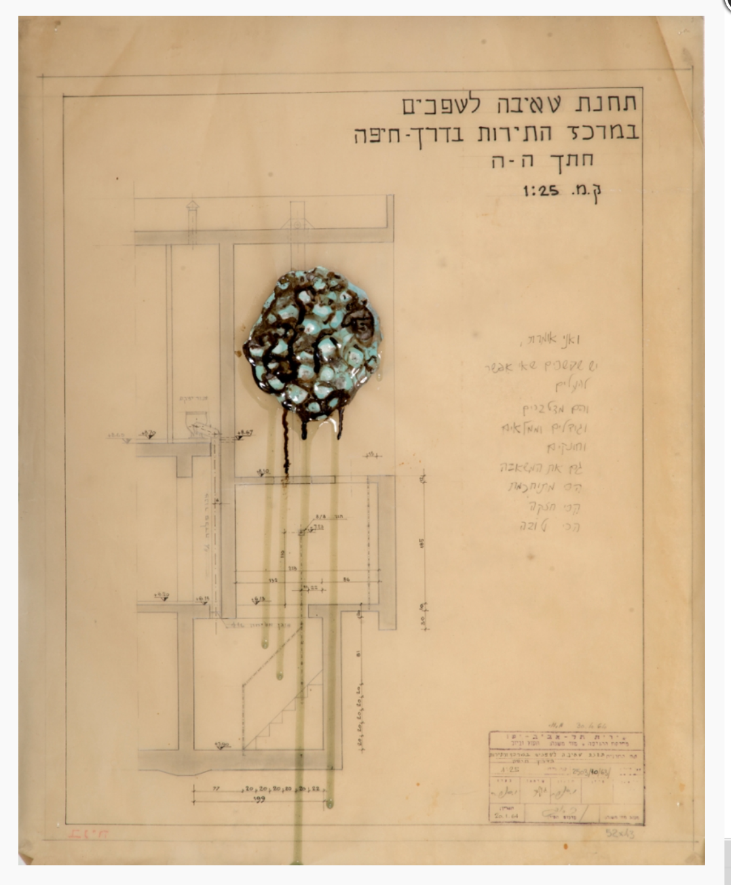
טכניקה מעורבת · 2016
הבנתי שהספר הוא ׳ספר׳ כשהגיעה ההזמנה מההוצאה להתחיל לעבוד על הכריכה. רגע לפני שהוא נמלא בהתרגשות, הלב חיסר פעימה… הספר באמת יקבל עכשיו פנים? …אצליח להעניק לו את הפנים שהן באמת שלו?
לא ידעתי איך תיראה הכריכה, וידעתי בדיוק איך תיראה הכריכה. אבל בעיקר — לא היה לי מושג איך למצוא את האנשים שיובילו את הדרך בה רעיון ילבש צורה.
חברה טובה, בית קפה, ואני ששופכת את מצוקתי — זה כל מה שנדרש. ״יש לי!״, היא הכריזה ודהרה קדימה. בַּמִּיָּדִיּוּת של עידן חיינו, דקה לאחר מכן כבר גללתי נרגשת בקבוצת פייסבוק של החברה, בין עושר ציורים שהרגישו כמו בית. מצאתי.
- — קבוצת הפייסבוק: אפשר להוציא את הבחורה מהקיבוץ (אבל בינינו, אי אפשר להוציא את הקיבוץ מהבחורה).
- — הציירת: שרון רשב״ם פרופ, ילדת קיבוץ בעצמה.
- — הציורים: בדיוק מה שראיתי בעיני רוחי, פני הספר שלי.
אין לי פייסבוק. לא מכירה ולא מבינה את הקונספט. הסתדרתי כך מצוין עד עתה, אבל עכשיו זה נעשה דחוף — איך אני מגיעה אל שרון?
אין לי פייסבוק, משמע אין לי שמץ ניסיון בכתיבת תגובות או כל דבר דומה — אבל כאן, כפי שאמרנו, זה נעשה דחוף… בסבל, חירבשתי הסבר מגומגם שנכתב ונמחק שלושים פעם, ושלחתי לחמי על פני המים.
ללחמים שאני שולחת לארץ נדרשת סבלנות, עד ששעוני — שעון ניו-זילנד — יחפוף במעט עם שעון הארץ. כשזינקתי מהמיטה בבוקר, חיכתה ההודעה. שרון ענתה. כן, היא תשמח לדבר ולשמוע עוד.
מעט לפני השיחה שקבענו, שלחתי לה את טקסט גב הכריכה, כדי שנהיה שתינו באותו עמוד — תרתי משמע. שרון ענתה: ״תקראי רגע״, ושלחה טקסט שנפתח כך:
״אוכל בקיבוץ. מטפלת אחת קראה לי גרגרנית. אחרת אמרה שיש לי עיניים גדולות, וכשהייתי יושבת לארוחה עם כל ילדי הגן, היא היתה תופסת את מקומה לצידי, כל עולמה מרוכז בצלחת שלי. ׳חזירה׳, היא היתה לוחשת לי. ׳עיניים גדולות׳. ואני הייתי מתבלבלת. חזירה זו מילה לא יפה. אבל עיניים גדולות זה טוב, לא?״…
הביטוי ״עיני עגל״ קטן ליד מידות העיניים שפתחתי. מה? מי..? יש עוד עיניים גדולות?
שרון אמנית. רגעי הילדות בקיבוץ לא נותרו בקווי ציוריה בלבד — הם זכו גם למילים. לדפים. לספרים. לא יכולתי לבקש מובילת דרך טובה יותר עבור פני הספר שלי.
השיחות עם שרון גילו שֻׁתָּפָה אינטליגנטית, חריפה, נושאת נאמנות עמוקה לזהותה-היא ולזהות אמנותה, ועם הבנה שעל הספר להיות נאמן לזהותו-הוא. שרון הפשילה שרוולים והתחילה לייצר את הקסם.
אני יכולה לומר, וגם אומרת, שהציורים של שרון לוכדים אותי בכל אספקט אמנותי — הקווים, החומרים, הצבעים, התוכן, ובטח עוד מלא היבטים שאין לי מושג בהם. אבל לא זה הדבר שבעטיו אני מלאת תודה על שנפגשו דרכינו לצורך הכריכה.
שרון מציירת כמו מי שהיה שם. לא אפרק את מה ש׳עושה את זה׳. זה פשוט זה. שרון לא מציירת בֶּיתֶלָדִים — הבֶּיתֶלָדִים מצייר את עצמו דרכה. את הציורים שלה על הקיבוץ לא יוכל לצייר מי שלא היה שם, גם אם יהיה המוכשר בציירים ויקבל הנחיות מדוקדקות של עובי הפס והזווית.
ידעתי שלא אכזבתי את הספר שלי. שעכשיו הוא באמת יכול לקבל פנים. שהצלחנו לתת לו את הפנים הנכונות לו.
מילה אישית
אם הספר נגע בכם, אם הוא עורר זיכרון או שאלה — אשמח לשמוע.
הדלת פתוחה, וכל סיפור שמגיע אליי מצטרף לפסיפס.